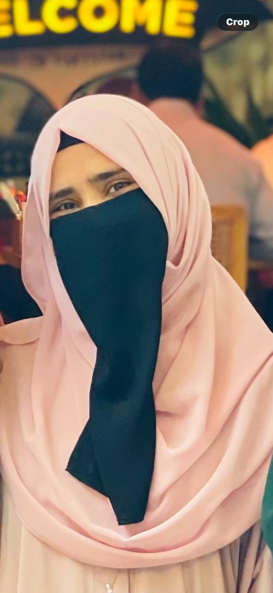

my corner of the internet
Sittara Noor
Computer Science student Aspiring developer
I like building websites and small programs, and I try to learn something new from every one of them.

always learning
a little about me
Curious mind, creative heart
The person behind the projects.
Hi, I'm Sittara.
I'm a BS Computer Science student at BBSUL, interested in web development, programming, databases and UI design.
I enjoy trying new technologies, solving problems and turning ideas into things people can actually use. Every project teaches me something I carry into the next one.
See my worklearning today,
building for tomorrow
what I'm learning
My toolkit
Technologies and creative tools I work with.
Programming
Tools and design
a few things I've built
Projects
Small steps, real projects and plenty of learning.
KZ & Co.
handmade florals
KZ & Co website
A business website that presents handmade floral products through a clean, easy-to-browse interface.
Rock-Paper-Scissors
A programming project built around the classic game, with the logic worked out from scratch.
more ideas are on the way
a note from me to you
Let's create something beautiful
Have an idea, a project, or just want to say hello? I'd love to hear from you.
Sittara